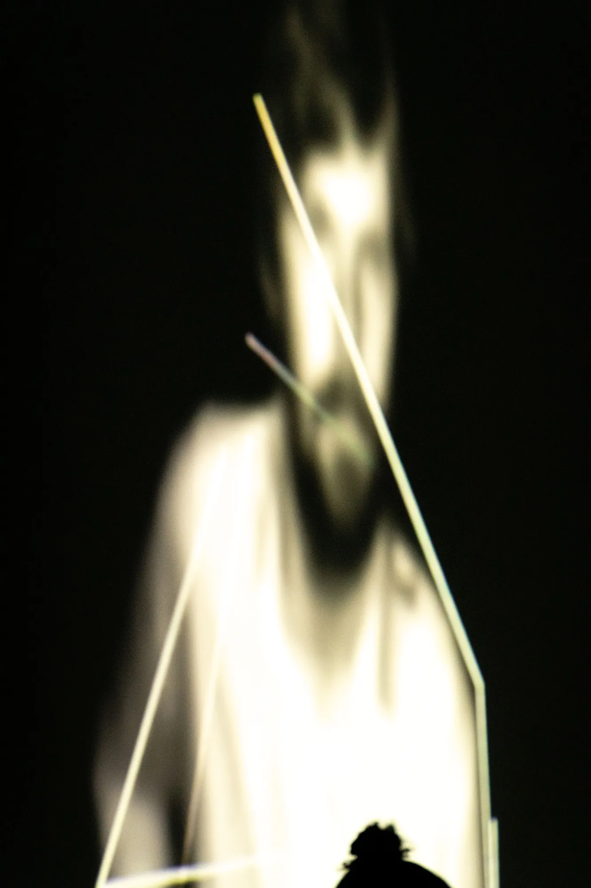
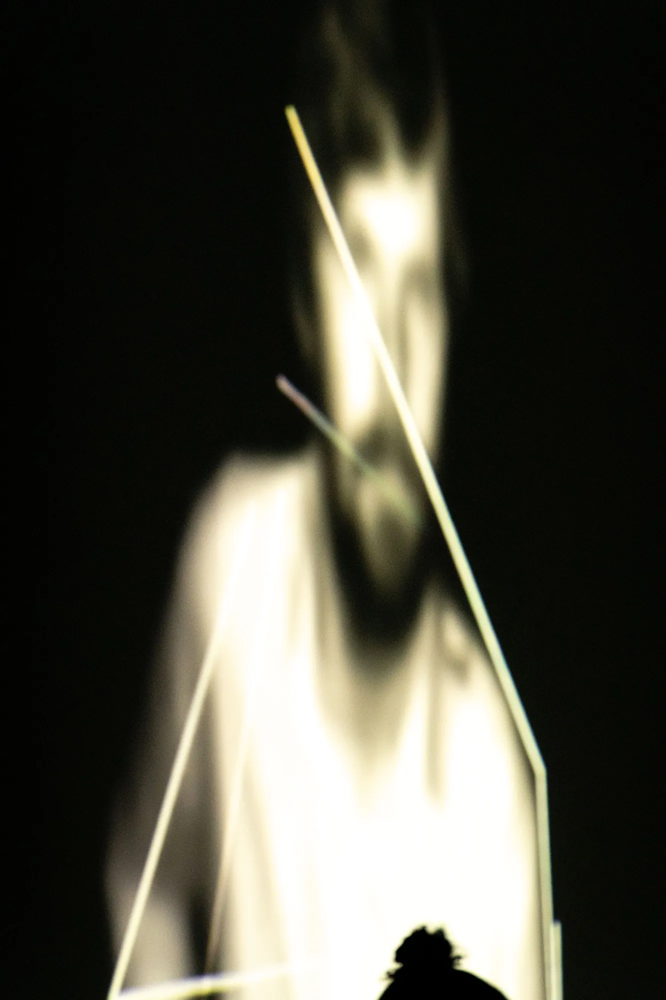
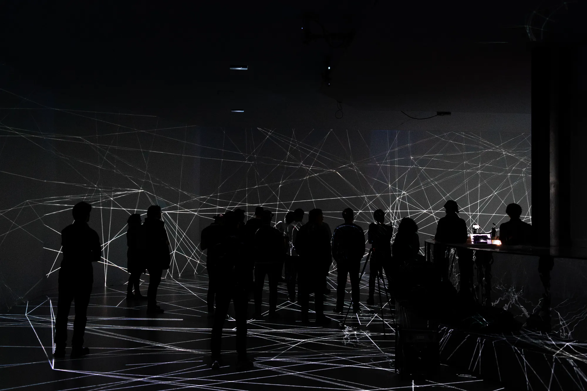
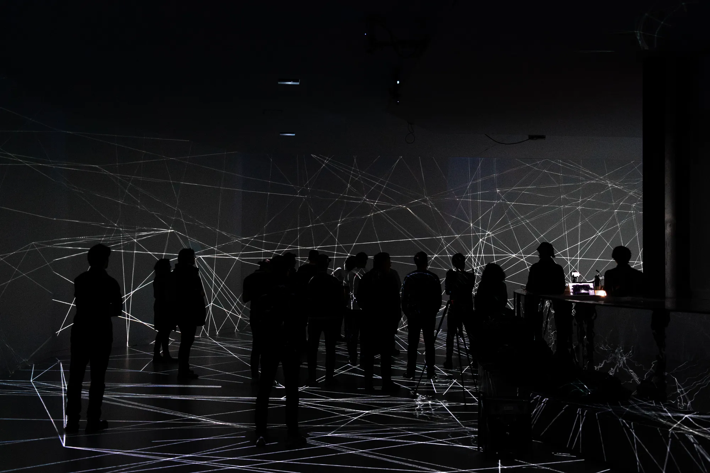
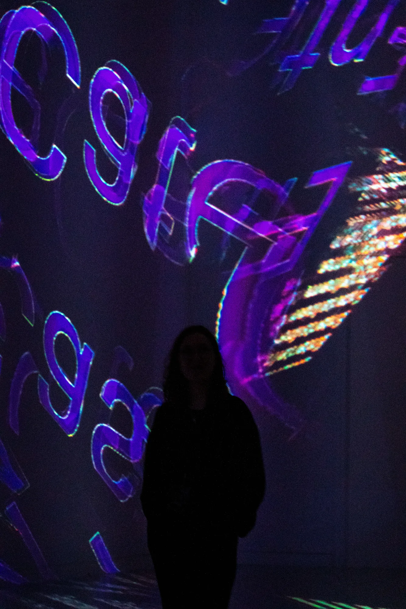
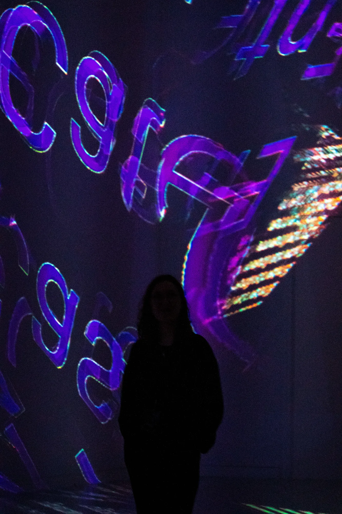
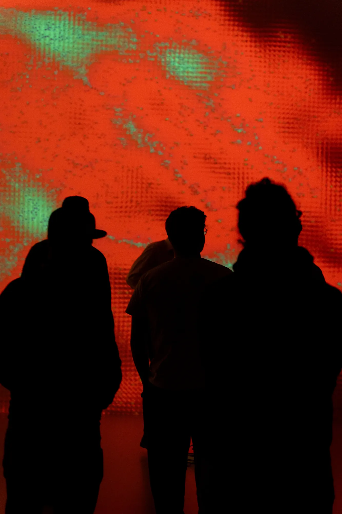
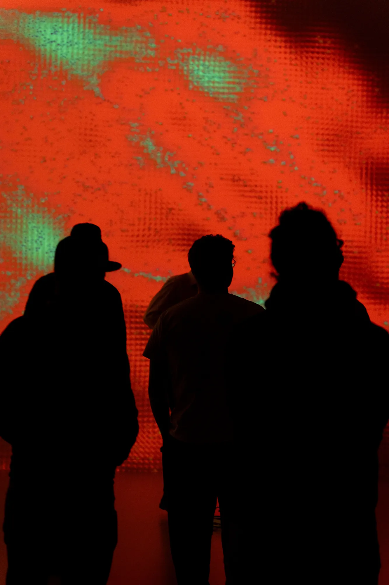

Feed // Back // Loop
Immersive Concert
A dystopian soundscape. An algorithm that listens, watches, evaluates — and interferes. Musicians as test subjects: analyzed, transformed, replicated.
Every movement a data set. Every sound a feedback. Every emotion a variable in the system. The performance as raw material — exploitable, shapeable,
endlessly reproducible. What proves successful is repeated. What works is replicated. WaveCaster™ Entertainment invites you to the ultimate live
experience — optimized, scaled, perfected. Ready for the experiment?
Audiovisual concert performance, live band, 360° real-time visuals, 28 projectors, spatialized multi-channel sound, 90 loudspeakers
- Immersive Concert
Type
Independent Project, Collaboration
Roles
Concept, Design, Programming, Setup, Show Control
Technologies
TouchDesigner, Kinect, Chataigne, Pixera, Reaper, Holophonix, Node.js, Svelte.js
 



 

 

 



Credits
Concept, Storytelling:
Jonas Wolter, Saïd Boulahcen, Vivien Helbling
Visuals Creation:
Vivien Helbling, Jonas Wolter
Programming Real-Time Video Rendering Pipeline, Video Network:
Jonas Wolter
Composition, Sound Design, Spatialized 3D Audio Mix:
Saïd Boulahcen